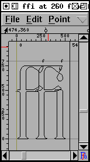
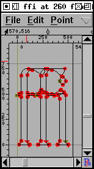
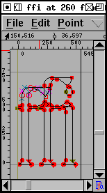
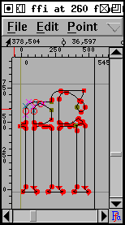
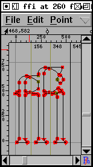
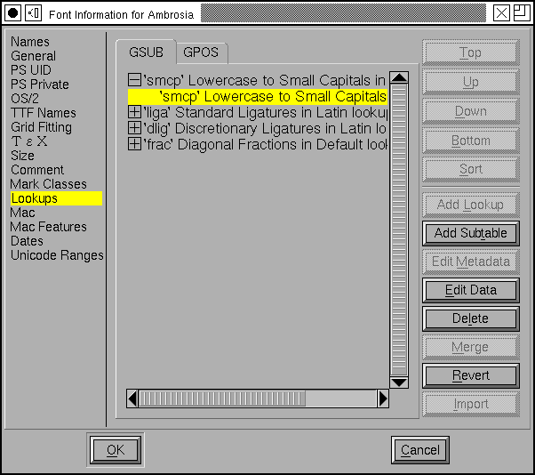
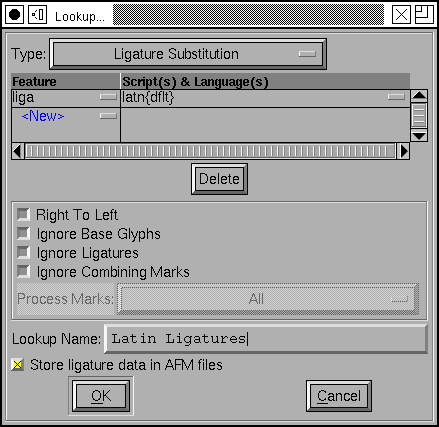
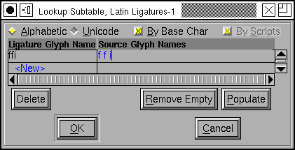

Latin, Greek and Cyrillic all have a large complement of accented glyphs. FontForge provides several ways to build accented glyphs out of base glyphs.
The most obvious mechanism is simple copy and paste: Copy the letter "A" and Paste it to "Ã" then copy the tilde accent and Paste it Into "Ã" (note Paste Into is subtly different from Paste. Paste clears out the glyph before pasting, while Paste Into merges what was in the glyph with the what is in the clipboard). Then you open up "Ã" and position the accent so that it appears properly centered over the A.
This mechanism is not particularly efficient, if you change the shape of the letter "A" you will need to regenerate all the accented glyphs built from it. FontForge has the concept of a Reference to a glyph. So you can Copy a Reference to "A", and Paste it, the Copy a Reference to tilde and Paste it Into, and then again adjust the position of the accent over the A.
Then if you change the shape of the A the shape of the A in "Ã" will be updated automagically -- as will the width of "Ã".
But FontForge knows that "Ã" is built out of "A" and the tilde accent, and it can easily create your accented glyphs itself by placing the references in "Ã" and then positioning the accent over the "A". (The Unicode consortium provides a database which lists the components of every accented glyph in Unicode and FontForge uses this).
As an example, open the file: tutorial/Ambrosia.sfd, then select all the glyphs at encodings 0xc0-0xff, and then press Element->Build->Build Accented all the accented glyphs will magically appear (there are a few glyphs in this range which are not accented, and they will remain blank).
FontForge has a heuristic for positioning accents (most accents are centered over the highest point of the glyph), sometimes this will produce bad results (if the one of the two stems of "u" is slightly taller than the other the accent will be placed over it rather than being centered over the glyph), so you should be prepared to look at your accented glyphs after creating them. You may need to adjust one or two (or you may even want to redesign your base glyphs slightly).
Unicode contains a number of ligature glyphs (in latin we have: Æ, OE, fi, etc. while in arabic there are hundreds). Again Unicode provides a database listing the components of each standard ligature.
FontForge cannot create a nice ligature for you, but what it can do is put all the components of the ligature into the glyph with Element->Build->Build Composite. This makes it slightly easier (at least in latin) to design a ligature.
|
 |
 |
 |
 |
 |
| Use the Element -> Glyph Info dialog to name the glyph and mark it as a ligature. Then use Element -> Build -> Build Composite to insert references to the ligature components. | Use the Edit-> Unlink References command to turn the references into a set of contours. | Adjust the components so that they will look better together. Here the stem of the first f has been lowered. | Use the Element -> Remove Overlap command to clean up the glyph. | Finally drag the ligature caret lines from the origin to more appropriate places between the components. |
Some word processors will allow the editing caret to be placed inside a ligature (with a caret position between each component of the ligature). This means that the user of that word processor does not need to know s/he is dealing with a ligature and sees behavior very similar to what s/he would see if the components were present. But if the word processor is to be able to do this it must have some information from the font designer giving the locations of appropriate caret positions. As soon as FontForge notices that a glyph is a ligature it will insert in it enough caret location lines to fit between the ligature's components. FontForge places these on the origin, if you leave them on the origin FontForge will ignore them. But once you have built your ligature you might want to move the pointer tool over to the origin line, press the button and drag one of the caret lines to its correct location. (Only Apple Advanced Typography and OpenType support this).
There are a good many ligatures needed for the indic scripts, but Unicode does not provide an encoding for them. If you wish to build a ligature that is not part of Unicode you may do so. First add an unencoded glyph to your font (or if your font is a Unicode font, you could use a code point in the private use area), and name the glyph. The name is important, if you name it correctly FontForge will be able to figure out that it is a ligature and what its components are. If you want to build a ligature out of the glyphs "longs", "longs" and "l" then name it "longs_longs_l", if you want to build a ligature out of Unicode 0D15, 0D4D and 0D15 then name it "uni0D15_uni0D4D_uni0D15".
Once you have named your ligature, and inserted its components (with Build Composite), you probably want to open the glyph, Unlink your References and edit them to make a pleasing shape (as above).
Unfortunately simply creating a ligature glyph is not enough. You must also include information in the font to say that the glyph is a ligature, and to say what components it is built from.
In OpenType this is handled by lookups and features. A lookup is a collection of tables in the font which contain transformation information. A feature is a collection of lookups and is a provides semantic information to the world outside the font about what that set of lookups can be expected to do. So in the example above the lookup would contain the information that "f" + "f" + "i" should turn into "ffi", while the feature would say that this is a standard ligature for the latin script.
So the first time you create a ligature glyph you will need to create a lookup (and a lookup subtable) in which the information for that glyph will reside. Any subsequent ligatures can probably share the same lookup and subtable.
(This may seem like overkill for latin ligatures, and perhaps it is, bt the complexity is needed for more complex writing systems).
You would open the Lookups pane of the Element->FontInfo command and
press the [Add Lookup] button. This will give you
a new dialog in which you can fill in the attributes of your
new lookup.
You must first choose the lookup type. For ligatures this should be "Ligature Substitution". You may then bind this lookup to a feature, script and language set. The "ffi" ligature is a standard ligature in latin typesetting so it should be bound to the 'liga' tag, and the 'latn' script. (If you click on the little box to the right of "liga" you will get a pulldown list of the so-called "friendly names" for the features. "liga" corresponds to "Standard Ligatures").
The language is a bit tricky. This ligature should probably be active for all languages except Turkish that use the latin script (Turkish uses a dotlessi and it is not clear whether the "i" in the "fi" and "ffi" ligatures has a dot over it). So we want to list all languages but Turkish. That's a lot of languages. The convention instead is that if a language isn't mentioned explicitly anywhere in the font then that language will be treated as the "default" language. So to make this feature not be active for Turkish, we'd have to create some other feature which specifically mentioned Turkish in its language list.
Underneath the feature list is a set of flags. In latin ligatures none of these flags need be set. In Arabic one might want to set both "Right to Left" and "Ignore Combining Marks".
Next the lookup must be given a name. This name is for your use and will never be seen in the real font. The name must be distinct from the name of any other lookup however.
Finally you get to decide whether you want the ligatures in this lookup to be stored in afm files.
Once you have created a lookup, you must create a
subtable in that lookup. Select the lookup line (in the Lookups
pane of Font Info) and press [Add Subtable]. This
is a fairly simple dialog... you simply provide a name for the
sub-table, and then another dialog will pop up and you will
(finally) be able to store your ligature information.
CAVEAT: OpenType engines will only apply features which they believe are appropriate for the current script (in Latin scripts, Uniscribe will apply 'liga'). Even worse, some applications may choose not to apply any features ever (Word does not do ligatures in latin -- though this may have changed with the 2007 release?). Microsoft tries to document what features they apply for which scripts in Uniscribe, but that isn't very helpful since Word and Office have quite different behavior than the default.